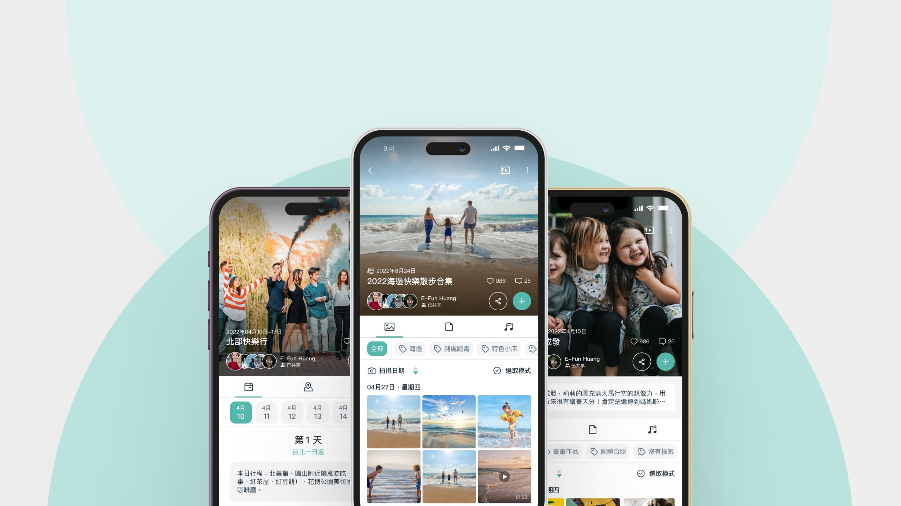

XnFun App｜Client: USI Global (Taiwan)
Untangling an existing system's logic and building new modular features from 0 to 1

What I Did
- Audited the existing system and untangled cross-platform logicwalked through iOS/Android and mapped a Functional Map, identifying shared logic across the Daily / Travel / Baby albums.
- Designed "Travel Itinerary" from 0 to 1based on guerrilla testing across four scenarios, designed "memory keywords" and a "itinerary overview" as the two core features.
- Consolidated design guidelines and IX flowfolded low-frequency features into a secondary menu, unified styles across platforms, and wrote complete interaction documentation aligning design, engineering, and the client.
Impact
Project
Overview
XnFun is a shared photo album app paired with the XnBay smart storage server, letting users back up photos and share albums with others. This project handled both optimizing the existing interface and logic, and building new features like "Travel Album" and "Baby Album" from scratch.
Problem
- Inconsistent cross-platform interface
iOS and Android differed in style and logic for actions like renaming albums or viewing members, raising learning and maintenance costs.
- No way to organize travel photos
Photos from multi-day trips were scattered across the timeline, making it hard to find memories by date or location.
- Low-frequency features cluttered the main flow
Actions like deleting an album sat alongside core browsing and sharing, inviting mis-taps and diluting the primary task.
Goal
- Unify cross-platform interaction logic
Make the same feature look and behave identically on both platforms to lower maintenance cost.
- Make travel memories retrievable in order
Build retrieval logic around dates and custom keywords so multi-day trips are quick to search.
- Extend the existing system rather than start over
New features carry forward existing interaction logic and visual style, auditing module reuse for future expansion.
How do you build modular new features from 0 to 1 on top of an existing system?
Auditing both platforms and competitors to find the system's logic and opportunities
I walked through the existing iOS/Android system and mapped a Functional Map, alongside analyzing competitors like We Album, Funliday, Wish Trip, Polar Steps, and Tripcast. The goal was to confirm the existing system's boundaries before deciding what the new feature should build on.
Guerrilla testing four scenarios to confirm real user needs
I ran guerrilla tests across four scenarios: during travel, organizing photos, sharing photos, and browsing photos. Results converged on one thing—users didn't want more albums, they wanted a way back to a specific day or leg of the trip.
Designing the "Travel Itinerary" core feature from 0 to 1
Built around two core features: "memory keywords" let users tag trip segments in their own words, and "itinerary overview" arranges memories by date into a jumpable structure. Though new, the feature carries forward the existing system's interaction logic and visual language.
Unifying interface style and writing guidelines as a shared language
Unified interface style and interactions across both platforms, folding low-frequency actions like deleting albums into a "more" menu. I also wrote a complete IX flow covering date display rules, album members, scroll behavior, and component states, aligning design, engineering, and the client.
Take away
Persuading the client relies on logic, not how polished the deck looks
The optimization direction was accepted by pointing out where current logic broke down and how maintenance cost would change—not by making screens prettier.
The specification document is itself a design
How detailed the design system and IX flow are determines whether engineering and the client truly understand it—which directly determines whether the design gets implemented faithfully.